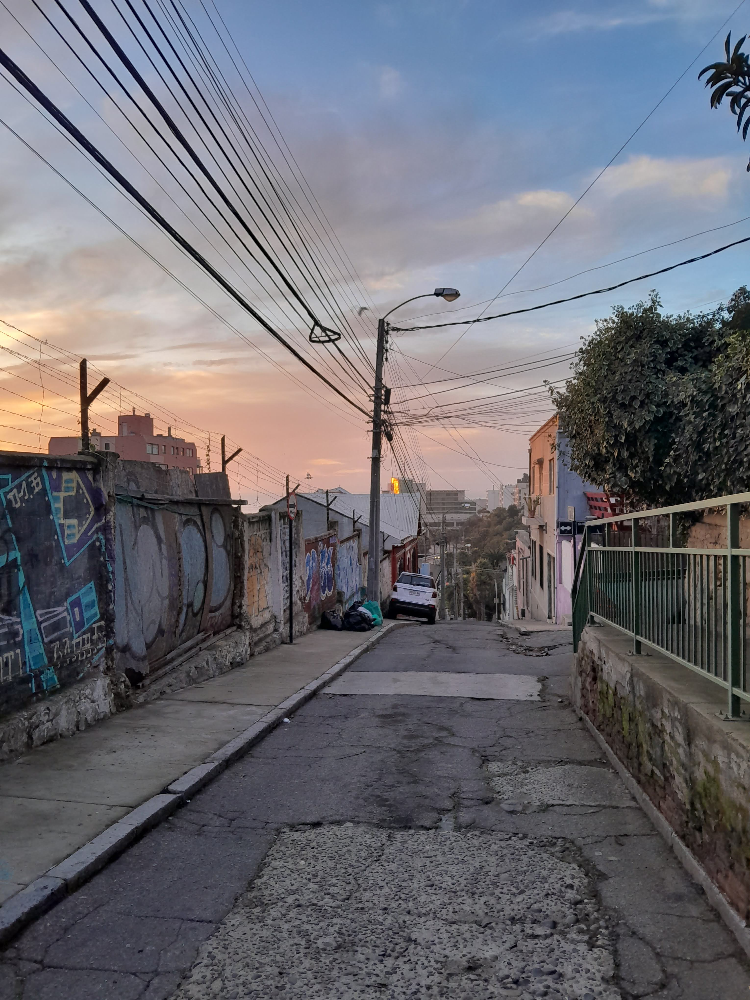
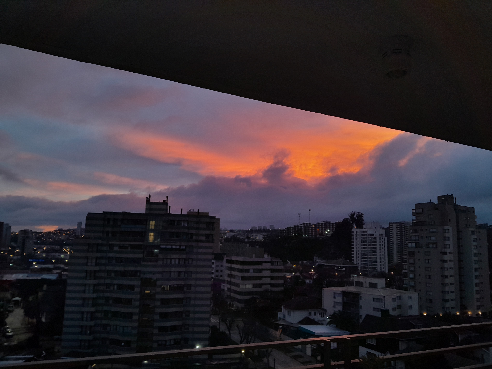
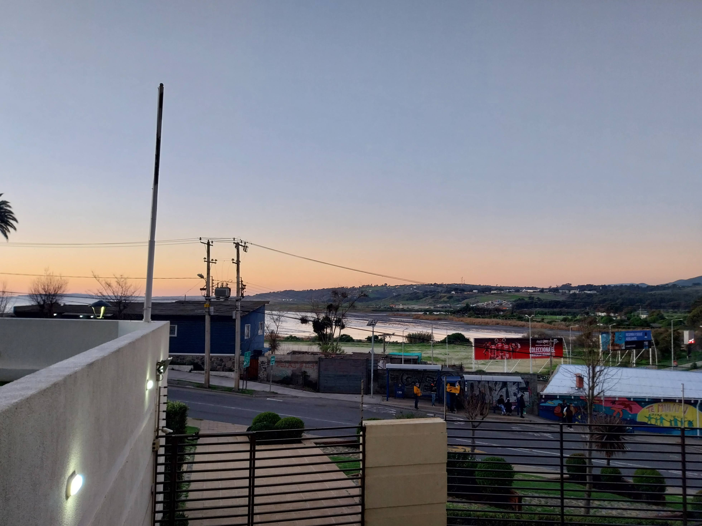

Chile, Viña Del Mar
for more Info click here
Location and Overview:
Viña del Mar is a coastal city in central Chile, located just about 120 kilometers (75 miles) northwest of the capital, Santiago. Known as "The Garden City" due to its lush parks and green spaces, it is one of Chile's most popular tourist destinations, attracting visitors for its beaches, festivals, and vibrant nightlife. It is part of the Valparaíso Region, situated along the Pacific Ocean.
Beaches and Coastal Attractions:
The city is famous for its beautiful beaches, which are popular for sunbathing, swimming, and surfing. Some of the best-known beaches include Playa Acapulco, Playa Los Cañones, and Playa Reñaca. The coastline features a mix of sandy shores, cliffs, and rocky areas, providing visitors with various scenic spots. The iconic Viña del Mar Pier, or Muelle Vergara, offers stunning views of the sea.Do you feel like this? Get Help
Historic Landmarks and Architecture:
Viña del Mar boasts a variety of architectural landmarks, with a blend of colonial-style buildings, modern high-rises, and elegant mansions. Notable sites include the Castillo Wulff, an early 20th-century castle on the coast, and the Quinta Vergara, a historic estate with gardens that hosts the renowned Viña del Mar International Song Festival. The city's architecture reflects its history as a popular retreat for Chile's upper class.Viña del Mar International Song Festival:
One of the most important cultural events in Latin America, the Viña del Mar International Song Festival is held annually in February. It attracts top artists from around the world and is broadcast to millions of viewers. The festival features music competitions, concerts, and performances, making it a major draw for international tourists and music lovers.
Parks and Gardens:
True to its nickname, Viña del Mar is filled with lush parks and gardens. Highlights include the Jardín Botánico Nacional, a vast botanical garden with native and international plant species, and the Parque Quinta Vergara, a historic park surrounding the festival venue. The city's commitment to greenery is also reflected in smaller parks and tree-lined streets, perfect for walking and relaxing.Cultural and Educational Institutions:
Viña del Mar is home to a range of cultural institutions, including museums, art galleries, and theaters. The Museo Fonck displays pre-Columbian art and artifacts, while the Teatro Municipal de Viña del Mar hosts performances ranging from theater to classical music. The city is also an educational hub, with several universities and colleges, contributing to its vibrant intellectual scene.
Nightlife and Dining:
The city's nightlife is one of its major attractions, with a wide variety of bars, clubs, and restaurants that cater to different tastes. The Avenida San Martín and Avenida Libertad are known for their lively bars and cafes, while upscale restaurants offer Chilean and international cuisines. Viña del Mar is also home to numerous seafood establishments, where visitors can enjoy fresh fish, ceviche, and traditional Chilean dishes like empanadas.- I wouldn't know
- But there are indeed lots of bars
- DO NOT DRINK
- DO NOT SMOKE
- and don't forget the good food
- I did gain weight in the mission
Scroll to Top Shawty